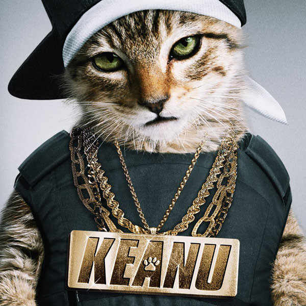

Felis silvestre catus
Introduccion
Hay docenas de razas, algunas sin pelo o incluso sin cola,
como resultado de mutaciones genéticas y años de selección
artificial, y existen en una amplia variedad de colores.
Son depredadores por naturaleza, siendo sus presas potenciales
más de cien especies diferentes de animales. Son capaces de
asimilar algunos conceptos, y ciertos ejemplares han sido
entrenados para manipular mecanismos simples.
Se comunican principalmente a través del maullido; también
con gemidos, gruñidos y con diferentes vocalizaciones,11
además del lenguaje corporal.
Algunas razas de gatos
Señor Don gato

En estado salvaje pueden tender a formar colonias o grupos,
sin embargo en la actualidad resulta uno de los animales de
compañía mas comunes en todo el mundo junto con el perro.
En cuanto a las clasificaciones científicas, se determinó
que los gatos salvajes se denominan Felis silvestris.
El gato con Botas

Se agrupa bajo este nombre a aquellos gatos que habiendo sido domésticos,
se volvieron nuevamente un poco salvajes, ya sea por abandono por parte
de sus dueños, o simplemente porque decidieron pasar la mayo parte de sus
vidas fuera de su hogar y estar literalmente en la calle, siendo así salvajes,
y buscando su propia supervivencia.
El gaton
Se agrupa bajo este nombre a aquellos gatos que habiendo sido domésticos,
se volvieron nuevamente un poco salvajes, ya sea por abandono por parte
de sus dueños, o simplemente porque decidieron pasar la mayo parte de sus
vidas fuera de su hogar y estar literalmente en la calle, siendo así salvajes,
y buscando su propia supervivencia.
